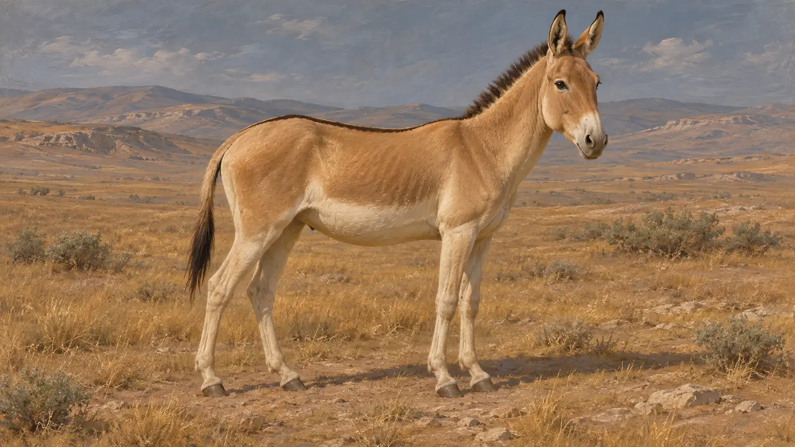
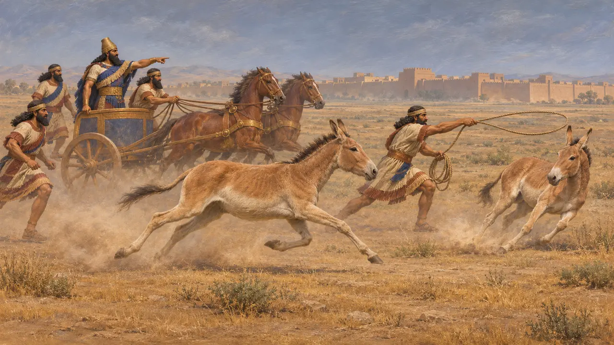
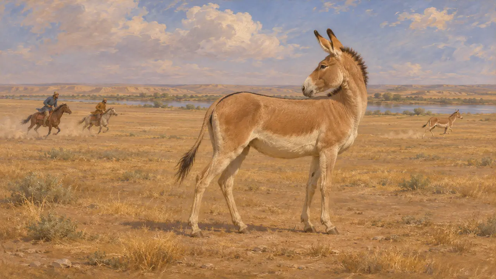
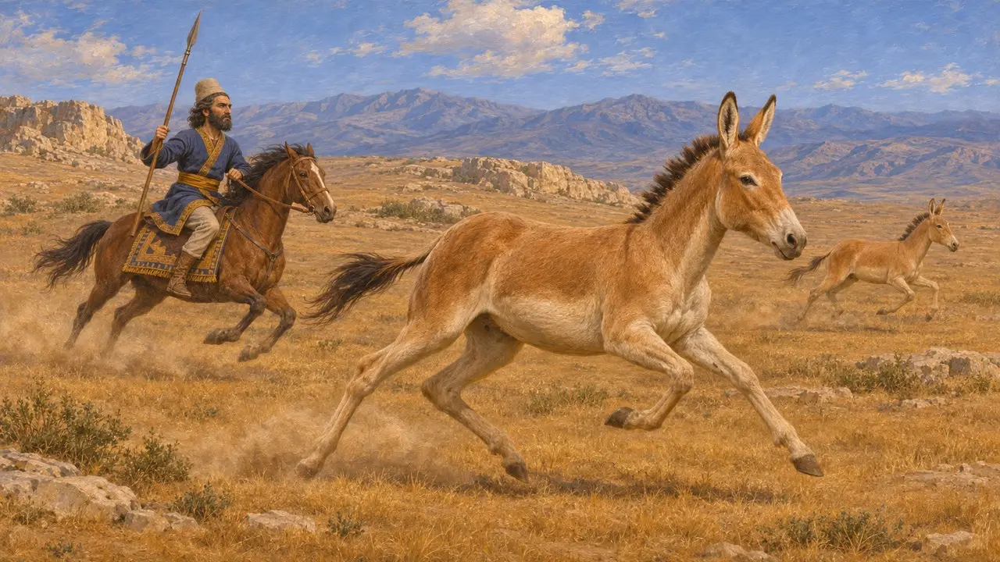
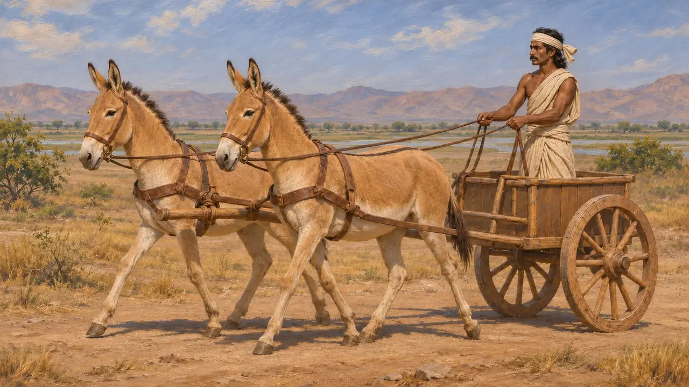
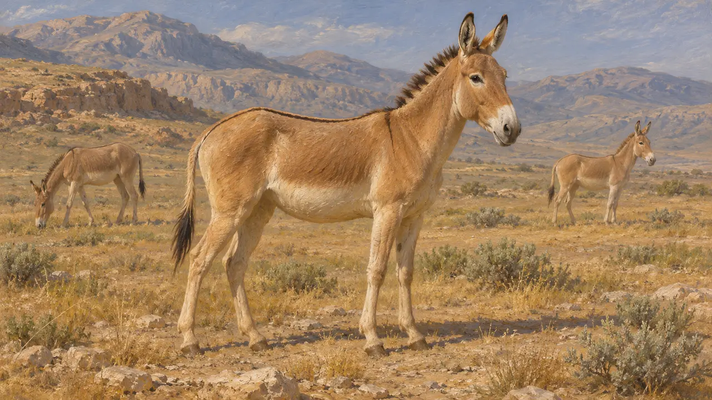
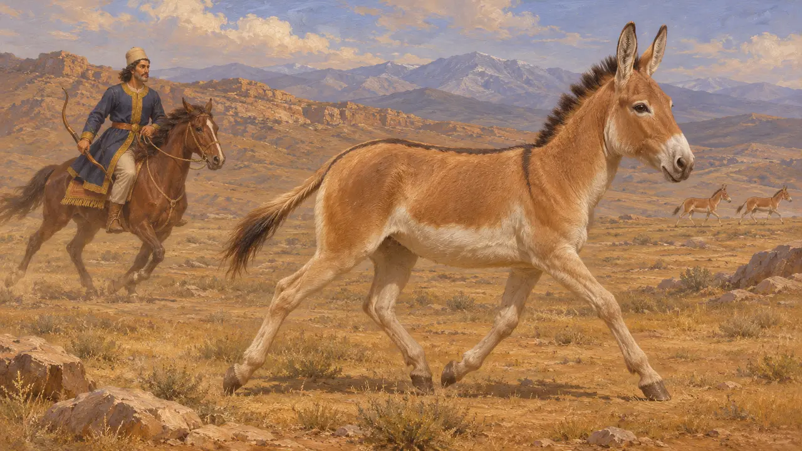

الموسوعة › الحياة البرية والطقس

الأونجر
الحمار البري في هضبة فارس وسهول بلاد الرافدين، القرنان السادس والخامس ق.م
في اللعبة: المستوى 1: ضريح المؤسس، المستوى 4: المصطبة، المستوى 5: الميثاق
الأونجر حمار بري أنحف من الحمار الأليف وأسرع منه، عاش في سهوب فارس وعيلام والأراضي الواقعة غربها. وقد أعلى الكتّاب القدماء من شأنه لسرعته وصعوبة الإمساك به. وكان الآشوريون يصطادونه بوصفه فريسة ملكية، ويصوّر زينوفون قورش وهو يصطاده.
في اللعبة: تَرسم اللعبة الحمر الوحشية الآسيوية حيواناتٍ برية عنصرًا من المشهد في مراحل باسارغاد وبارسا وسوسا، ولا تقرؤها أي قاعدة. والنموذج المستخدم حمارٌ جرى تعديله ليقترب من الحمار الوحشي الآسيوي. أما وضعها في سوسا فهو تفسير المصمّمين، وليس حقيقة موثّقة.

الحيوان
رواية قديمةالأونجر حمار بري من النوع Equus hemionus. بنيته أخف من بنية الحمار الأليف، وفروه رملي اللون وبطنه شاحب. كان جزءًا مألوفًا من حيوانات سهوب غرب آسيا، ويُعرف له عدة سلالات.
Xenophon, Anabasis 1.5.2

الحمر البرية في الفن الآشوري
في السجلاتتُظهر النقوش البارزة من قصر آشوربانيبال في نينوى، التي صُنعت في القرن السابع، الحمير الوحشية وهي تُطارَد وتُصاد في الصيد الملكي. وهي أفضل صورة معاصرة لكيفية تعامل حكام المنطقة مع هذا الحيوان قبل الفرس. ويُرجَّح أن الملوك الفرس ورثوا تقليدًا في البلاط يرى في صيد الطرائد البرية دليلًا على المهارة الملكية.
Ashurbanipal reliefs, Nineveh (British Museum)

زينوفون عن السرعة والمطاردة
رواية قديمةيصف زينوفون، الذي زحف مع قورش الأصغر سنة 401 ق.م، الحمير البرية في السهل على الفرات في بلاد العرب. ويقول إن الفرسان لم يستطيعوا اللحاق بها بسهولة، لأنها كانت تعدو بعيدًا أمامهم ثم تنتظر. وروايته تبيّن كيف كان الناس ينظرون إلى هذا الحيوان، لا أين كان يعيش في هضبة فارس.
Xenophon, Anabasis 1.5.2

قورش الصيّاد في تربية قورش
رواية قديمةفي «كيروبيديا» يجعل كسينوفون قورش الفتى يصطاد الأيائل والغزلان والأغنام البرية والحمير الوحشية. العمل صورة مثالية كُتبت في القرن الرابع، والصيد فيه جزء من صورته للأمير الكامل. وهو يبيّن ما كان القارئ اليوناني يتوقعه من رياضة الملوك الفرس، لا ما فعله قورش حقًا.
Xenophon, Cyropaedia 1.4.7

الحمر البرية في الجرّ
رواية قديمةيذكر هيرودوت الفرقة الهندية في جيش خشايارشا ويقول إن بعض عرباتها كانت تجرّها الخيول وبعضها الآخر الحمير الوحشية. ويوحي تقريره بأن هذا الحيوان كان يمكن ترويضه للجرّ في بعض الأقاليم. لكنه لا يدل على أن الفرس فعلوا الشيء نفسه.
Herodotus 7.86

أي نوع من الحمر البرية الآسيوية قصد الكتّاب؟
متنازع عليهعاشت عدة سلالات من الحمار البري في غرب آسيا، ويعدّ علماء الحيوان المحدثون النوع السوري منقرضاً. أما ما إذا كانت الحيوانات التي وصفها الكتّاب اليونانيون من السلالة نفسها التي عاشت على الهضبة المحيطة بباسارغاد وبارسا فلا يمكن حسمه من النصوص.
Xenophon, Anabasis 1.5.2

بهرام غور والحمير الوحشية
أسطورة لاحقةفي التقليد الفارسي، المدوَّن بعد قرون من الهخامنشيين، يُلقَّب الملك الساساني بهرام الخامس بـ«غور»، وهي كلمة تعني الحمار البري، ويُعرف بأنه صيّاد مشهور لهذا الحيوان. هذه حكاية متأخرة ولا صلة لها بالعصر الهخامنشي. وهي تُظهر إلى متى ظل الحمار البري مرتبطًا بالملكية في الذاكرة الإيرانية.
Ferdowsi, Shahnameh (Bahram Gur)
المصادر
- Xenophon, Anabasis 1.5.2
- Xenophon, Cyropaedia 1.4.7
- Herodotus 7.86
- Ashurbanipal reliefs, Nineveh (British Museum)